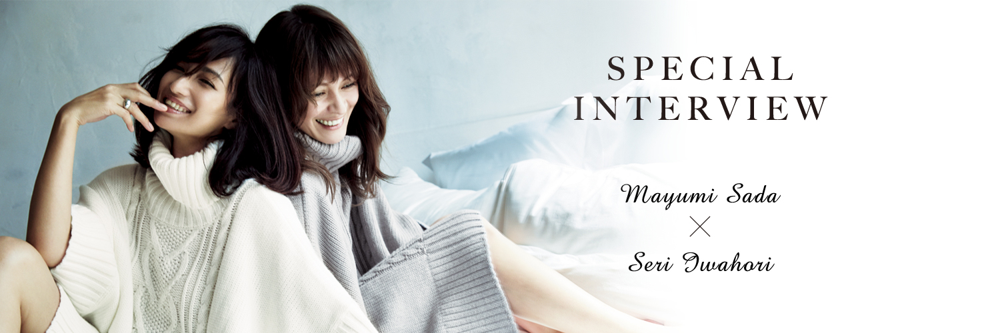

“「泣くこと、笑うこと、イヤなことが一緒で」−Mayumi−„
Our story
ーお二人は、とても長いお付き合いですよね。
真由美（以下M）：初対面は18年前、「ViVi」の撮影で。どこのスタジオだったっけ？
せり（以下S）：初対面はその前。（東京・渋谷の）東急文化会館の前のロケバス。
M：そうそう、よく覚えてるねー！
S：その頃とは人生、環境、すべてが変わったよね。
M：私たちも大人になったなーみたいな実感がすごくある。
S：二人一緒での仕事は、「オトナミューズ」が創刊してから久しぶりに復活したけど、それまではまったくない時期もあったんだよね。
M：そもそも子どもが生まれてしばらくは、まったく仕事してなかったし。
S：20代の頃は毎日一緒に仕事してて、PJ（2004年夏号）にも一緒に出て。
Relation
ーPEACH JOHNとしても、こうして再びお二人を迎えることができて光栄です。今もよく顔を合わせるんですか？
S：会うのはたまにかな？タイミングが合えば、家族ぐるみでごはんを食べたりするよね。
M：前はほんとに365日一緒にいたからね。
S：だからかな。今、絶妙な距離感だよね、私たち。そんなにベタベタしないで。
M：そうだね。
S：イヤだと思うところが一緒だし（笑）。
M：うん、泣くこと、笑うこと、イヤなことが一緒。「○○見て泣いたよ」も、「超面白いよね」も、「超むかつくよね」もだいたい同じ。
S：（笑）
Private
ー最近、二人で盛り上がった話題はありますか？
S：子どもの話はやっぱり多いね。「うちの子がこんなことしてすごくウケるんだけど」とか、お互いに。
M：うちの子たち、せりちゃんの上の女の子に対してもう憧れのまなざしなの。会うと意識しすぎて様子がおかしくなる（笑）。お洒落で、カッコいいから。
ーせりさんのお子さんの方が少し年上なんですよね。
S：そう、似たような時期に結婚して、子ども産んで。
M：せりちゃんはすごく大変だったと思う、先に産んでるから。まだ自分が経験してない頃は、育児は大変だって聞くたびにそうだろうなーとは思ってたけど、心の底までは分かってなかった。
S：心の葛藤まではね。たまには外に出かけたいのに、絶対無理だったりとか。もしもどちらかが結婚してなかったら、今みたいな関係じゃなかったと思う。
M：うん、全然違ったよね。仕事と自分との距離感とか、なかなか理解できなかっただろうな。
Seri’s Loves
ー佐田さんには過去4回、
SALONにご登場いただいていますが、岩堀さんは初めて。
今回SALONのウエアを着てみて、いかがでしたか？
S：素肌に着るものは、少しでもチクチクするとだめなんですけど、どれも気持ち良かった！外にも着て行けそうなものばかりで。特に「ソフトタッチローブ」（P07）が好き。
素肌にとろけてうっとり。
極上の「ソフトタッチ」。
DETAIL
足のあるナイロン・アクリルニットがとろけるように柔らか。やや薄手で伸びがよく、きゅうくつ感のない着心地。お手持ちのパジャマに重ねてもすっきりしたシルエットを描きます。裾付近のグラデーション染めがアクセント。ひざ下丈。
SALON by PJ／ソフトタッチローブ
￥9,800円＋税


Respect
ーママになってから、
お互いの意外な一面を知ったということは？
M：全然。想像通りのお母さん。
S：そう、想定通り。でも、そっちの方がすごいと思う。自分のキャラのままうろたえることもなく、ちゃんと自分のペースで育児できてるって。
M：いえいえ、せりちゃんが育児に関しては理想の先輩だから、本当に頼りにしてました。
ーお互い、尊敬するところは？
M：一言で言うと、すっごく優しい。うん、せりちゃんは優しい。
S：まゆみんはね、何でも全力でやりとげるところ。昔からね。仕事も、家事も、育児も、ちゃんと全部。すごく真面目。
M：あなたも、やんなるくらい真面目でしょ！（笑）
Profile
佐 田 真 由 美 (さだ・まゆみ)
1977年生まれ。『ViVi』『GLAMOROUS』をはじめとするモデル活動にとどまらず、女優として映画やドラマにも出演。現在は『Marisol』『オトナミューズ』などで活躍の傍ら、ジュエリーブランド「Enasoluna」のトータルディレクターも務める。
blog：ameblo.jp/sada-mayumi
Instagram：@sadamayumi
岩 堀 せ り (いわほり・せり)
1977年生まれ。1998年に『ViVi』でモデルデビュー。以来『GLAMOROUS』『オトナミューズ』等のファッション誌、広告などさまざまなメディアで活躍。結婚・出産後も飾らない人柄や自然体のライフスタイルが女性の支持を集めている。
web：www.iwahori-seri.net/
Instagram：@iwahoriseri